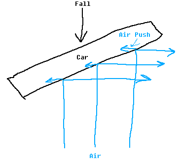
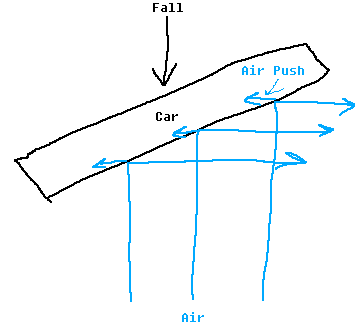

A Guide To Most Distance Mechanics
> Air Drift
The car in this game actually experiences some degree of simulated aerodynamics. It is very subtle, but you can notice it by falling from a high point, and seeing the car change its speed and the direction it moves in. For example if I fall like this (with no rotation) I land at this point:

But, if I start rotated, say 39 degrees along the car spawner's Z axis, I fall and land at this point:

The behavior of this air drift is like how you would expect if there really was air. In the case I was rotated, for example, the results are as if the air were pushing like this:

This mechanic even goes as far as to affect the car's speed. For example, if you fall with your car underside facing toward the direction you are falling in, you will be less "aerodynamic" and, because of this, you will actually fall slower than if you fell with your nose pointed toward the direction you were falling in, because doing that would make you more "aerodynamic" (thus making it easier for you to move through the air and fall faster). While this mechanic only has a very small effect on the car's movement, keeping in mind that aerodynamics matter may help a little bit in retaining speed and for making high or long jumps. The effect of the aerodynamics is also increased at high speeds, and thus an important factor to keep in mind when going very fast. This mechanic also becomes increasingly apparent in the presence of force zones, however, in force zones, the effect is actually inverted. For example, keeping the car with the same 39 degree rotation as before, but replacing the gravity with a force zone, the car falls at this point:

As you can see, instead of moving to the blue point, the car actually moves in the opposite direction, and ends up on the right side of the red point instead of the left side. I don't know why the game is programmed like this. Maybe they made a mistake in inverting the effect? I guess it doesn't matter. What matters is, in force zones, the aerodynamic force will behave opposite to how it would behave normally. This arguably is the most noticed aspect and effect of the aerodynamics mechanic, since in levels where a force zone is particularity strong, this effect will be comparatively strong in said force zone, meaning that having the car angled improperly could result in it being launched in a horrible direction (most notable case of this is in 'NWBO: Install' by Tribow), and having it angled correctly could result in very favorable launches (which extremely important in achieving fast times on the official level 'Zenith', which has many strong force zones).
But, if I start rotated, say 39 degrees along the car spawner's Z axis, I fall and land at this point:
The behavior of this air drift is like how you would expect if there really was air. In the case I was rotated, for example, the results are as if the air were pushing like this:

This mechanic even goes as far as to affect the car's speed. For example, if you fall with your car underside facing toward the direction you are falling in, you will be less "aerodynamic" and, because of this, you will actually fall slower than if you fell with your nose pointed toward the direction you were falling in, because doing that would make you more "aerodynamic" (thus making it easier for you to move through the air and fall faster). While this mechanic only has a very small effect on the car's movement, keeping in mind that aerodynamics matter may help a little bit in retaining speed and for making high or long jumps. The effect of the aerodynamics is also increased at high speeds, and thus an important factor to keep in mind when going very fast. This mechanic also becomes increasingly apparent in the presence of force zones, however, in force zones, the effect is actually inverted. For example, keeping the car with the same 39 degree rotation as before, but replacing the gravity with a force zone, the car falls at this point:
As you can see, instead of moving to the blue point, the car actually moves in the opposite direction, and ends up on the right side of the red point instead of the left side. I don't know why the game is programmed like this. Maybe they made a mistake in inverting the effect? I guess it doesn't matter. What matters is, in force zones, the aerodynamic force will behave opposite to how it would behave normally. This arguably is the most noticed aspect and effect of the aerodynamics mechanic, since in levels where a force zone is particularity strong, this effect will be comparatively strong in said force zone, meaning that having the car angled improperly could result in it being launched in a horrible direction (most notable case of this is in 'NWBO: Install' by Tribow), and having it angled correctly could result in very favorable launches (which extremely important in achieving fast times on the official level 'Zenith', which has many strong force zones).
<< < 8 > >>
1 2 3 4 5 6 7 8 9 10 11 12
1 2 3 4 5 6 7 8 9 10 11 12
• Tricks • Turning In Midair With Gripfly • Slightly Faster Wing Turning • Differences in Forward Gripfly and Frontward Gripfly • Throttling Boost When Going Up Then Forward • Advantage Of Slow Falling Before Going Up • Wings To Make Higher Jumps • Air Drift • Vertical Gripfly Interaction With Force Zone • Advantage Of Backwards Gripfly • Rotational Alignment Through Rotating In One Direction • Cooldown Through Thruster/Grip Tapping •